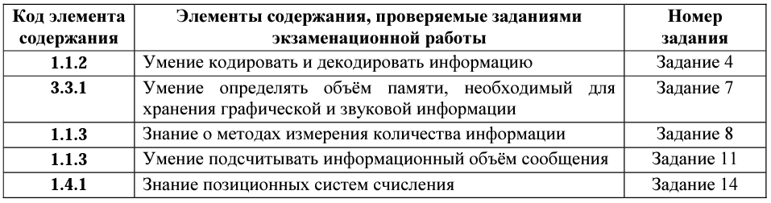
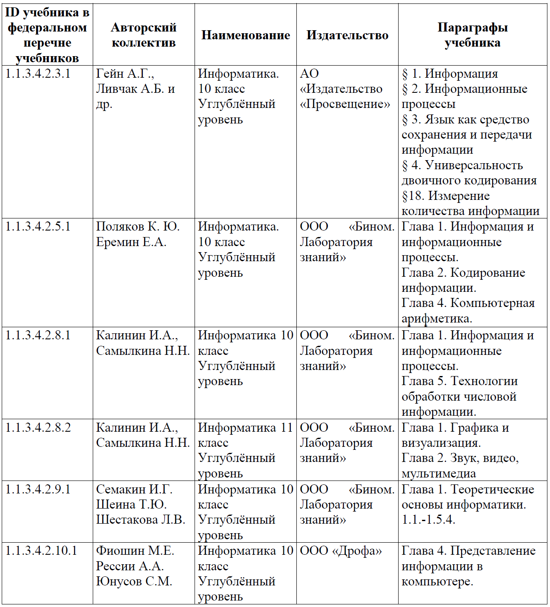

Информация и информационные процессы. Кодирование информации. Системы счисления
Какие позиции кодификатора элементов содержания проверяет:
Что нужно знать/уметь по теме:
ЗНАТЬ:
Основные понятия: информатика, информация, информационный процесс, информационная система; виды информации по способам ее восприятия человеком и по способам ее представления на материальных носителях.
Равномерное и неравномерное кодирование. Декодирование.
Алфавитный подход к оценке количества информации.
Кодирование графической информации. Цветовые модели. Растровое и векторное кодирование. Кодирование звуковой информации. Оцифровка звука.
Системы счисления. Двоичная, восьмеричная, шестнадцатеричная системы счисления. Арифметические операции. Применение.
Кодирование текстов. Однобайтные кодировки. Стандарт UNICODE.
Законы, закономерности: общие закономерности протекания информационных процессов в системах различной природы.
Формулы перевода единиц измерения количества информации, формула Шеннона, формула Хартли.
Правила перевода целых и дробных чисел из десятичной записи в систему счисления с данным основанием, признак делимости числа на основание системы счисления. Условие Фано.
УМЕТЬ:
кодировать и декодировать тексты по заданной кодовой таблице; строить неравномерные коды, допускающие однозначное декодирование сообщений, используя условие Фано; понимать задачи построения кода, обеспечивающего по возможности меньшую среднюю длину сообщения при известной частоте символов, и кода, допускающего диагностику ошибок;
записывать натуральные числа в системе счисления с данным основанием; использовать при решении задач свойства позиционной записи числа;
определять информационный объем графических и звуковых данных при заданных условиях дискретизации;
осознанно подходить к выбору ИКТ-средств и программного обеспечения для решения задач, возникающих в ходе учебы и вне ее, для своих учебных и иных целей.
Где взять информацию по теме
Учебники федерального перечня Минпросвещения России
Какие задания открытого банка выполнить для тренировки:
Задание №4
Вариант №1 Вариант №2 Вариант №3 Вариант №4 Вариант №5 Вариант №6 Вариант №7 Вариант №8 Вариант №9 Вариант №10 Вариант №11 Вариант №12 Вариант №13 Вариант №14 Вариант №15Задание №7
Вариант №1 Вариант №2 Вариант №3 Вариант №4 Вариант №5Задание №8
Вариант №1 Вариант №2 Вариант №3 Вариант №4 Вариант №5 Вариант №6 Вариант №7 Вариант №8 Вариант №9 Вариант №10 Вариант №11Задание №11
Вариант №1 Вариант №2 Вариант №3 Вариант №4 Вариант №5 Вариант №6 Вариант №7 Вариант №8 Вариант №9 Вариант №10 Вариант №11 Вариант №12Задание №14
Вариант №1 Вариант №2 Вариант №3 Вариант №4 Вариант №5 Вариант №6 Вариант №7 Вариант №8 Вариант №9 Вариант №10 Вариант №11 Вариант №12 Вариант №13 Вариант №14 Вариант №15 Вариант №16 Вариант №17